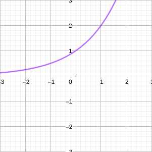

Sejam os domínios de f e g os conjuntos A e B, respectivamente, os conjuntos das funções combinadas serão:
$f + g, f - g, f \cdot g, $ é AB
gf,eˊ{x∈R∣g(x)=0}
EX: determine do domínio de:
h(x)=x−x−2
D(h)=x∈R∣x>2
Função composta
Dadas as duas funções f e g, a função composta f∘g, também denominada composição de f e g, ou “f bola g”, é definida por:
(f∘g)(x)=f(g(x))
EX:
f(x)=x2g(x)=cos(x)h(x)=x1
(f∘g)(x)=cos2(x)(f∘h)(x)=(x1)2
(g∘f)(x)=cos(x2)(g∘h)(x)=cos(x1)
(h∘f)(x)=x21(h∘g)(x)=cos(x)1
OBS: note que não há relação direta dos conjuntos de comínio de suas funções compostas.
EX2: seja f(x)=x e g(x)=2−x, encontrar as funções a seguir e seus domínios:
a)f∘g
2−x,D(f∘g)={x∈R∣x≤2}
b)g∘f
2−x,D(g∘g)={x∈R∣0≤x≤4}
c)f∘f
x,D(f∘f)={x∈R∣x≥0}
d)g∘g
2−2−x,D(g∘g)={x∈R∣−2≤x≤2}
Funções exponenciais
Em geral, uma função exponencial é representada na forma.
f(x)=ax
Onde a é uma constante.
Se x é um inteiro positivo.
ax=a⋅a⋅a⋅a, x parcelas.
Se x=0, a0=1.
Se x é um inteiro negativo.
ax=a−x1
Se x é um racional x=qp, onde p e q são inteiros e q=0, então:
ax=aqp→qap ou (qa)p
Por sua vez, também podemos definir axonde x é irracional. O resultado é obtido conceitualmente por sua aproximação sucessiva fr exponenciais cujo expoentes são racionais.
EX: existe um numero k que representa o número 23 como aproximação 2q1p1≤23≤2q2p2, cujos p1, p2, q1 e q2 são racionais e q1 e q2>0.
Decorrem dos exponenciais as propriedades:
1.ax+y=ax⋅ay
2.ax−y=ayax
3.(ax)y=aa⋅y
4.(a⋅b)x=ax⋅bx
O número e
Quando o valor da base a da exponencial equivale ao “Número de Euler”, aproximado pelo número:
e=2,71828, onde e é irracional.
Denomina-se uma função cuja base é e como “exponencial natural”, existem propriedades importantes quando se usa e como base exponencial:
1. a reta tangente de ex no ponto (0,1), possui coeficiente angular exatamente igual a 1.
*2.*utiliza-se uma relação númerica para representar qualquer exponencial de um número real a na forma:
ax=elna
Funções inversas e logaritmos
Para definirmos conceitualmente funções inversas, vamos relembrar algumas relações.
1. uma função f é denominada função injetora se ela nunca assume o mesmo valor duas vezes, ou seja, f(x1)=f(x2), sempre que x1=x2. Podemos verificar isso também com o teste da reta horizontal.
TESTE DA RETA HORIZONTAL: uma função é injetora se se nenhuma reta horizontal intercepta seu gráfico em mais de um ponto, graficamente:

EX: a função f(x)=x3 é injetora, equanto g(x)=x2 não é injetora.
por que é importante saber se uma função é ou não injetora?: funções injetoras, são precisamente, a classe de função que possuem inversas, denotada por f−1(x).
2. há uma relação entre domínio e imagem de uma função f e sua inversa f−1:
DEFINIÇÃO: seja f uma função injetora cujo domínio é o conjunto A e a imagem, B. Então sua inversa f−1 tem domínio B e imagem A.
D(f)=Im(f−1)Im(f)=D(f−1) EX: encontrar f{-1}(x) nos pontos a seguir:
1)f−1(1)=3
2)f−1(5)=4
3)f−1(−2)=0
Propriedades das funções inversas
f−1(f(x))=x,x∈D(f)f(f−1(x))=x,x∈D(f−1)
Como encontrar a função inversa da função injetora f?
1. escrever y=f(x)
2. isolar x na equação, escrevendo em termos de y se possível.
3. para expressar f−1 como função de x, troque x por y. A equação resultante é:
y=f−1(x)
EX: encontrar a função inversa de f(x)=x3+2, passo a passo:
1.
y=x3+2
2.
y−2=x3
3y−2=x
3.
3x−2=y⇔f−1(x)=3x−2
Funções logarítmicas
Seja a função exponencial f(x)=ax. a função exponencial é injetora, ou seja, existe uma função f−1(x) tal que:
f−1(ax)=x
af−1(x)=x
Essa função f−1 recebe o nome de função logarítmica e é definida por:
logax=y⟺ay=x
Ou seja, se x>0, logax é o expoente que se deve elevar a para obter x, ou seja, loga(ax)=x e alogax=x.
Propriedades de logaritmos
Se x e y forem números positivos, então:
1.loga(xy)=logax+logay
2.loga(yx)=logax−logay
3.loga(xy)=y⋅logax
EX: inversa de f(x)=2x−1
Levando em conta f(x)=ax2k+1, k∈Z, ela é injetora, ou seja, se x for elevado a um número impar ela é injetora.